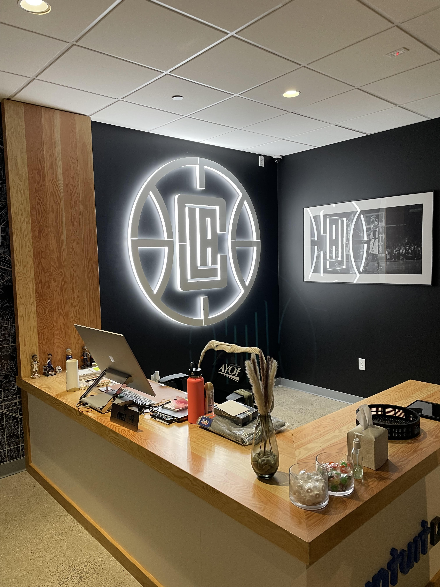

Projects Summary
Below, I'll list some of my favorite projects I've had the opportunity to work on. Most projects have an associated demo showing how all the moving pieces work together. I'll also place a link to each repo in case you'd like to take a deeper look!
Summarize CLI - a Hugging Face and AWS Sagemaker tool
A command line tool that takes a Hugging Face summarizer model (pegasus-xsum by default), deploys it to AWS Sagemaker, and queries it for inference. I made this tool utilizing Python, Bash, and a cool program named Bashly to help me develop the CLI arguments and flags. At the moment, the project does not have a complete README, demo, or proper automation as I am still adding more functionality before I consider it "complete". Nonetheless, the link to the repo is below.
NBA Over/Under Prediction App
Streamlit app that automatically pulls newest data, predicts on it, and serves betting predictions to the user. Utilizes GitHub Actions for continuous integration and continuous delivery to AWS EC2. For this project, I used Python and a fairly simple Sci-kit Learn linear regression model (emphasis was more on the CI/CD than model tuning).
Demo:
Machine Learning API
FastAPI application that predicts Jayson Tatum's points per game based on continuously updated data from ESPN. Deploys automatically to AWS AppRunner.
Demo:
Finding Traumatic Brain Injury in CT Scans
For my image & video processing course at Duke, my teammates and I used multi-Otsu thresholding to segment potential instances of TBI from brain CT scans. This involved a variety of preprocessing steps to ensure consistency as well as researching and testing both machine learning methods and other segmentation methods.
About me
I'm currently finishing up my MS in Computer Engineering at Duke University, where I've gained a deep understanding of the underlying principles of computer systems, algorithms, and machine learning. I'm an aspiring ML engineer and make a point to spend time every day perfecting my craft and learning about advancements in the industry.
Throughout my academic career, I have focused on developing my skills in data analysis, machine learning, and DevOps/automation. I've worked on numerous projects exploring the intersection of these interests, which I hope to demonstrate through this portfolio. My expertise includes training, evaluating, and deploying machine learning models and completing end-to-end data science projects.
In addition to my academic pursuits, I've gained practical experience through my internship with the LA Clippers doing data analytics work (summers 2021 & 2022). You can read more about my time with the Clippers here.
As a dedicated and detail-oriented engineer, I'm committed to delivering high-quality solutions to complex problems. I'm passionate about using my skills to advance the field of machine learning and contribute to the development of new and innovative technologies.
In my free time, I enjoy keeping up with the latest developments in machine learning and attending industry events and conferences. I'm also somewhat of a basketball fanatic and find it to be a fascinating space for the application of ML. I'm excited about the opportunities that lie ahead and look forward to making a meaningful impact as a machine learning practitioner.
Undergraduate Studies
I started my undergraduate degree at Lasell University as a business major and a part of the men's basketball team. During my second semester, I took an introductory computing class and absolutely fell in love with the field of computer science. I then knew I wanted programming and analytics to be part of my career. I later transferred to Bryant University where I received a Bachelor's degree in data science with minors in business administration and mathematics. Outside of academics, I was part of the men's ultimate frisbee team and helped establish the school's first club basketball team.

During my time with the Clippers, I worked on various machine learning and analytics projects. Two of my most prevalent are listed below:
-
Season Ticket Holder Objections: I analyzed call transcripts from season ticket holders to identify common objections raised by customers. By carefully reviewing these transcripts and using text analytics methods, I was able to uncover recurring themes and patterns. This allowed me to provide valuable insights to the company and make recommendations for improving customer satisfaction and retention.
-
Attendance Predictions & Key Variables: In this project, I deployed machine learning models to analyze key variables that impact attendance at Clippers games. By utilizing data from various sources and employing advanced machine learning techniques, I was able to uncover important insights and patterns in attendance behavior. This information helped the company make data-driven decisions on how to improve attendance rates and optimize their operations.
Additionally, I worked on various ad-hoc requests and foundational analytics projects. The main analytics project I worked on during my first summer with the Clippers was in regards to developing a new ticketing model for the Intuit Dome - the Clippers' new stadium opening in Inglewood for the 2024-25 NBA Season. My team and I proposed a subscription-based ticketing model that would aim to improve the fan experience and reach a wider target market than we previously had been.
I'm proud to say that the subscription-based model will be implemented for the Clippers' first season in the Intuit Dome! By targeting a specific demographic and opening up this opportunity for fans to attend games, we hope to see an increase in Clipper spirit as well as a $1-2 million increase during the first year of implementation.